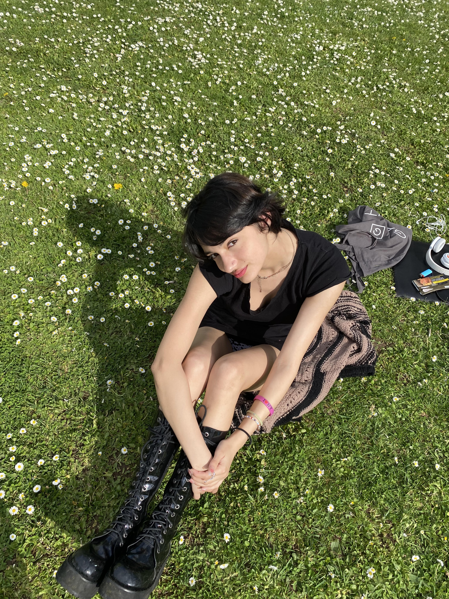

GET TO KNOW ME !!

Nice to meet you !! My Name is Aliya Vatelot. I was born and raised in France. I moved to Dubai when I was 9 years old to study at an international school. That's when I knew I wanted to lead an international life. Also, as i've visited many places around the world throughout my vacations, Sri Lanka being one of my favourite places, I have become curious and open-minded. I'm currently living in Cergy, where I'm studying a degree in Business Administration at ESSEC Business School
My song of the moment
MY LIFE AS AN ESSEC STUDENT
I don't have any association but I enjoy helping my friends with theirs. We like to go to Paris which is only 30 minutes away in RER A. We like to party during the week-end (and the week 😉). I really enjoy being an ESSEC student as there are a lot of international students here. I've met people from countries all over the world. I appreciate learning about different cultures and traditions.

I also enjoy learning new things as marketing, or economics. I believe I've made a great choice by choosing to study business in ESSEC. Every teacher is wholesome and quite patient (except for some...). We have a lot of work these days, therefore we can't go out as we used to when we arrived to Cergy. It's not really a problem to me, I realize we have to work and can't always party.

FASHION
I've been into fashion for as long as I can remember. I truly enjoy good outfits, things that are visually aesthetic. Living next to Paris has reinforced this passion for fashion, I can go easily tothrift shops. There is the fashion week twice a year. And isn't Paris the city of fashion ? There are all the great designers as Chanel, Yves Saint Laurent, Louis Vuitton.
Also, I feel like fashion helps to communicate with people from everywhere. It's like an unique language that truly evrybody understands.
Talking about fashion, I want to warn you about fast fashion and its dangers. Fast fashion is a relatively new phenomenon in the industry that causes extensive damage to the planet, exploits workers, and harms animals. Here's why it is best to thrift and to boycott big brands.

VIVIENNE WESTWOOD

FAST FASHION
MY SPORT LIFE
I'm a very active and enthusiastic girl, so sports are a part of my daily life. I have done many sports throughout my whole life. These include horse riding, surfing, dance, judo, skiing and swimming. There's not a single sport so far, out of these, that I haven't enjoyed.
Overall, without sports, I wouldn't have become who I currently am; I feel they're part of my personality.
<
>
INTERNSHIP
I am currently looking for a 3 months internship to validate my first year of studies. I need to achieve this internship in communication, marketing or finance. It's quite hard to find but if you happen to be passing by my website, take a look at my LinkedIn down there.